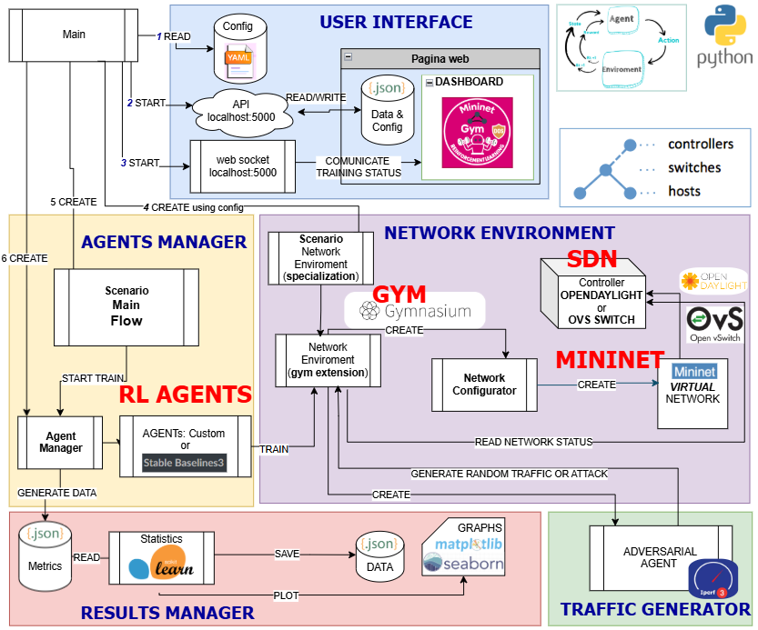
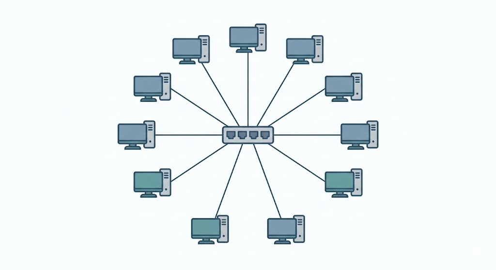
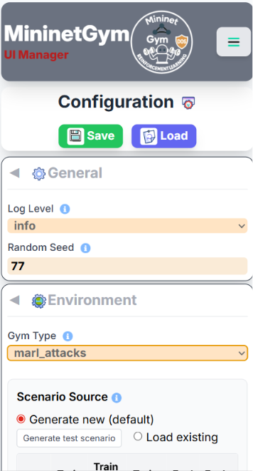
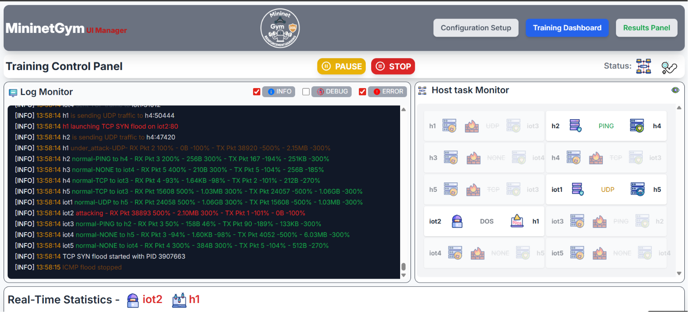
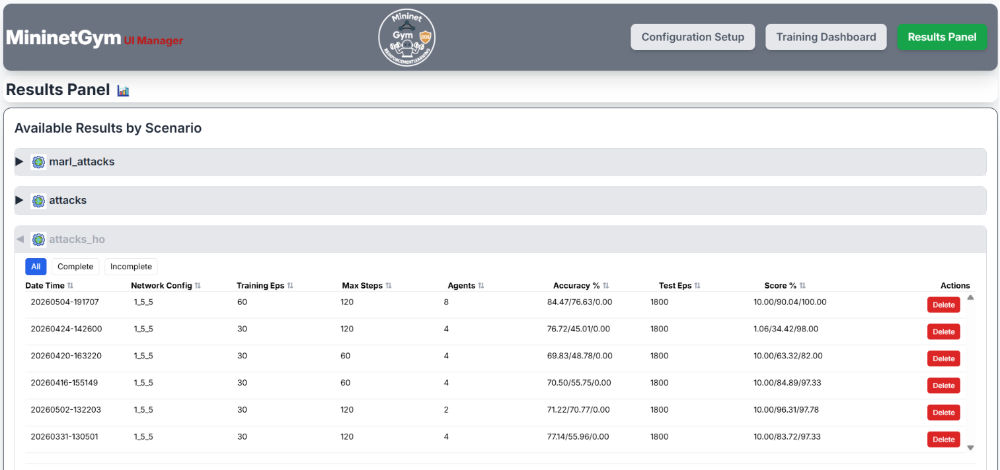
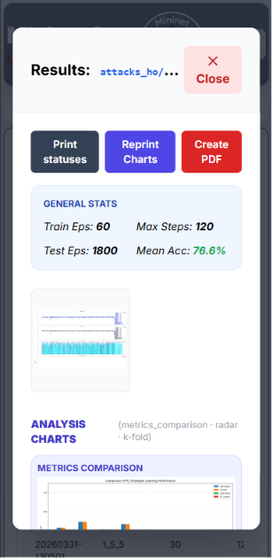

MininetGym Manual
MininetGym is a browser-accessible, open-source framework for training and evaluating Reinforcement Learning (RL) agents on cybersecurity tasks inside a live Software-Defined Network (SDN) emulated with Mininet and controlled by OpenDayLight.
The web dashboard exposes three main panels — Configuration Setup, Training Dashboard, and Results Panel — that cover the full experiment lifecycle without requiring any command-line interaction.
A final section, Auxiliary Tools & Integrations, documents optional helpers that live outside that browser flow: mobile push notifications, config status tagging, and unattended batch runs.

http://<host>:5000 in any modern browser
(Chrome, Firefox, Edge). The UI is fully responsive and works on mobile devices too.
Configuration Setup
This panel lets you define every aspect of an experiment before starting training. Changes are saved immediately with the Save button.
Network Topology
The switch (OVS) sits at the center. All hosts and IoT devices connect to it in a star topology, as shown in the schema below.

- Hosts — number of regular hosts in the Mininet topology (default 5). Each host can generate normal traffic and, depending on the scenario, act as an attacker or victim.
- IoT Devices — number of IoT nodes attached to the switch (default 5). IoT nodes generate lightweight traffic patterns distinct from regular hosts.
- Controller — OpenDayLight REST API address; typically
127.0.0.1:8181for a local instance or the Docker host IP for a containerised deployment.
Screenshots — Configuration Panel


Gym Type (Scenario)
The gym_type field selects both the task and the data source. Every scenario
has a live variant (traffic is generated in real time inside Mininet) and
a _from_dataset variant (observations are replayed from a
pre-recorded scenario.json file, which is much faster and fully reproducible).
| gym_type value | UI label | Task | Action space | Data source |
|---|---|---|---|---|
classification | Classification | Classify traffic: None / Ping / UDP / TCP | Alert only (4 classes) | Live Mininet |
classification_from_dataset | Classification (dataset) | Same classification task | Alert only (4 classes) | Replay dataset |
attacks | Attack-Net | Binary detection: Normal vs. Attack (global view) | Alert only (2 classes) | Live Mininet |
attacks_from_dataset | Attack-Net (dataset) | Same binary detection | Alert only (2 classes) | Replay dataset |
attacks_ho | Attack-PerHost | Per-host: Normal / Victim / Attacker | SDN link block per host | Live Mininet |
attacks_ho_from_dataset | Attack-PerHost (dataset) | Same per-host detection | SDN link block per host | Replay dataset |
marl_pz | MARL-PZ | PettingZoo multi-agent (Host agents + optional Coordinator), Dec-POMDP with CTDE | Distributed SDN block | Live Mininet |
marl_pz_from_dataset | MARL-PZ (dataset) | Same MARL-PZ task | Distributed SDN block | Replay dataset |
attacks_ho) is the primary single-agent demonstration
scenario: a correct Attacker classification triggers an OpenDayLight flow rule that drops
traffic from that host at the switch level. Use the _from_dataset variant whenever you
want fast, reproducible runs without a running Mininet network.
marl_pz) is the multi-agent scenario — a PettingZoo Parallel-API
environment. See the dedicated MARL-PZ — PettingZoo Multi-Agent
Mode section below for architecture, communication strategies, and agent compatibility.
marl_pz / marl_pz_from_dataset scenarios. The UI
blocks and auto-disables these agents when marl_pz is selected — see the
Agent Compatibility note under MARL-PZ — PettingZoo Multi-Agent Mode
below for the reason and a MAPPO reference.
Agent Configuration
Use the Add Agent button to include one or more agents in the experiment. Each agent entry has:
- Algorithm — choose from Q-Learning, SARSA, DQN, PPO, A2C, Supervised. PPO and A2C are not available when the scenario is
marl_pz— see MARL-PZ Agent Compatibility below. - Name — a free-form label shown in all charts and tables.
- Episodes — number of training episodes (overrides
env_params.episodesif set per-agent). - Steps per episode — maximum steps before an episode resets (overrides
env_params.max_steps).
Multiple agents can run sequentially in the same experiment for easy comparison.
Full Configuration Reference
All parameters are stored in config/default.yaml and editable live from the
Configuration panel. The table below documents every key available in the configuration file,
organised by section.
Global Settings
| Parameter | Default | Description |
|---|---|---|
training_directory | _training |
Root directory where all experiment outputs are written. Each run creates a timestamped sub-folder: <training_directory>/<gym_type>/<YYYYMMDD-HHMMSS>_<switches>_<hosts>_<iots>/. |
enable_web_interface | true |
Enable or disable the web dashboard. Set to false to run headless from the command line only. |
web_server_port | 5000 |
TCP port the Flask web server listens on. Change this if port 5000 is already in use on your machine. |
server_user | mininet-gym |
Unix user that owns Mininet-related processes (e.g. sudo mn commands). Must have passwordless sudo for Mininet commands. |
log_level | info |
Logging verbosity: info for normal operation, debug for verbose per-step output. Debug mode generates significantly more I/O and may slow training. |
random_seed | 77 |
Integer seed passed to NumPy and Python's random module to make runs reproducible. Change to get a different but still reproducible outcome. |
Environment Parameters (env_params)
| Parameter | Default | Description |
|---|---|---|
gym_type | attacks |
Selects which scenario pipeline to execute. See the Gym Type table above for all valid values. Use *_from_dataset variants to replay pre-recorded scenario.json files; use plain variants for live traffic generation inside Mininet. |
agent_execution_mode | parallel |
Controls how multiple agents are scheduled within an episode. parallel (default): all agents act concurrently each step — normal production behaviour. sequential: agents act one after the other — useful for debugging to understand the environment's step-by-step response to each decision. |
csv_file | — | Path to a pre-recorded traffic CSV file. Required only when gym_type is classification_from_dataset and when using the Supervised agent with a CSV data source. For JSON-based dataset replays the scenario file is selected via the UI instead. |
episodes | 10 |
Number of training episodes. One episode runs until max_steps is reached or the early-stop condition is met. More episodes → longer training but better convergence. Can be overridden per-agent. |
max_steps | 20 |
Maximum number of environment steps per episode. When this limit is reached the episode resets regardless of accuracy. Increase for scenarios that need sustained observation windows (e.g. long attack durations). |
test_episodes | 80 |
Number of evaluation episodes run after training completes. These episodes use the learned policy without exploration (ε = 0 for tabular agents) to produce the final metrics reported in the Results panel. |
n_bins | 4 |
Number of bins used by log-scale state discretisation for tabular agents (Q-Learning, SARSA). Higher values preserve more detail but grow the Q-table exponentially. Deep agents (DQN, PPO, A2C) ignore this parameter — they consume raw or normalised continuous features. |
steps_min_percentage | 0.9 |
Minimum fraction of max_steps that must elapse before early-stop is evaluated. E.g. 0.9 with 20 steps means at least 18 steps must complete. Prevents premature termination on lucky early episodes. |
accuracy_min | 0.9 |
Accuracy threshold for early-stop. If accuracy exceeds this value and steps_min_percentage is satisfied, the episode may terminate early. Set to 1.0 to disable early stop. |
wait_after_read | 1 |
Seconds to pause after querying OpenDayLight flow statistics before collecting the next observation. Increase on slow controllers or congested networks to avoid stale readings. Has no effect with _from_dataset variants. |
show_normal_traffic | true |
Include normal-traffic generation events in the web console log and server log. Disable to reduce log noise during long runs. |
print_training_chart | true |
Save per-episode reward and accuracy chart images to the run output folder during training. Disable to reduce disk I/O on resource-constrained machines. |
must_check_env | false |
Run Gymnasium's check_env() validator before starting. Useful when developing new scenario environments to catch API contract violations. Adds startup overhead; keep false in production. |
- Generate new (default) — a new scenario is created when training starts.
- Generate test scenario — creates a preview in memory and opens the analysis popup; no file is saved.
- Load existing — click a row to select an existing
scenario.json. When navigating to Training,episodes,max_stepsandtest_episodesare overridden with the values stored in that file.
Attack Parameters (env_params.attacks)
Active for attack-oriented scenarios: Attack-Net, Attack-PerHost, MARL-PZ (and their _from_dataset equivalents).
Probability & Timing
| Parameter | Default | Applies to | Description |
|---|---|---|---|
likely | 0.45 | Attack-Net, global attacks | Base probability (0.0–0.5) that any idle host starts an attack at each step. A value of 0.45 means roughly 45 % chance per step per host. Used by the attacks and attacks_from_dataset scenarios; in attacks_ho it is superseded by likely_train/likely_eval. |
likely_train | 0.9 | Attack-PerHost, MARL-PZ | Attack probability during training episodes (0.0–1.0). A high value (e.g. 0.9) exposes the agent to frequent attacks so it can learn the block policy quickly. Lower this if convergence is unstable. |
likely_eval | 0.3 | Attack-PerHost, MARL-PZ | Attack probability during evaluation episodes (0.0–1.0). A lower value (e.g. 0.3) simulates a realistic sparse-attack environment for fair metrics. Must be ≤ likely_train in typical setups. |
max_attack_percentage | 0.9 | All attack scenarios | Hard cap on effective attack probability regardless of dynamic scaling (0.0–1.0). Prevents the generator from creating pathological 100 % attack conditions that would give the agent no normal-traffic baseline. |
short_attack_duration | 5 | Attack-PerHost, MARL-PZ | Length (in steps) of a SHORT_ATTACK window. Lower values (2–3) produce bursty spikes that are harder to detect before they end; higher values (8–10) give the agent more time to react. |
long_attack_duration | 25 | Attack-PerHost, MARL-PZ | Length (in steps) of a LONG_ATTACK window. Increase for sustained attacks that stress mitigation latency; decrease for fragmented, intermittent attack patterns. |
no_attack_timeout | 3 | Attack-PerHost, MARL-PZ | Cooldown period (steps) after any attack before the same host can attack again. A low value (3–5) creates high-density alternating attacks; a high value (15–30) spaces attacks out and makes normal-traffic windows more prominent. |
Unblock Policy
| Parameter | Default | Description |
|---|---|---|
unblock_min_hold_rounds | 2 |
Minimum number of full episode rounds a host must remain SDN-blocked before the agent is permitted to unblock it. Prevents oscillation where a host is blocked and immediately unblocked every step. |
unblock_required_normal_streak | 2 |
Number of consecutive NORMAL decisions the agent must make for a blocked host before the block is lifted. Acts as a stability filter: the agent must see sustained normal behaviour, not a single clean step, before restoring connectivity. |
SDN Enforcement
| Parameter | Default | Description |
|---|---|---|
apply_drop_rules | false |
When true the environment pushes real OpenDayLight flow rules to drop traffic from an identified attacker at the OVS switch. When false the environment computes reward feedback without touching the network — useful for pure RL experiments that do not require a live SDN controller. |
Observation Space (attacks_ho and attacks_ho_from_dataset)
| Parameter | Default | Description |
|---|---|---|
attacks.include_percentage_variations | false |
Controls whether percentage-variation features are included in the per-host observation vector.
|
Detection Thresholds (env_params.attacks.thresholds and env_params.classification.thresholds)
Thresholds are used by the rule-based labeller that converts raw OpenDayLight flow statistics into ground-truth labels for reward computation. The labeller flags a host as under attack when both the absolute counter and its variation exceed their respective thresholds.
Attack scenarios
| Parameter | Default | Description |
|---|---|---|
attacks.thresholds.packets | 22000 |
Absolute packet-count threshold per observation window. Values above this indicate anomalous traffic volume. Multiply by the number of hosts to derive the upper bound for log-bin discretisation in tabular agents. |
attacks.thresholds.var_packets | 50 |
Allowed packet-count variation (%) relative to a rolling baseline. If the delta exceeds this percentage the traffic is flagged as potentially unstable. Typical UDP floods produce variation well above 50 %. |
attacks.thresholds.bytes | 423000000 |
Absolute byte-volume threshold. Used alongside packet count to characterise attack intensity. Note: for hping3 --flood --udp attacks, packet count is the primary indicator; bytes play a secondary role. |
attacks.thresholds.var_bytes | 30 |
Allowed byte variation (%) relative to baseline. Useful for detecting volumetric anomalies in TCP or ICMP floods where payload size varies. |
Classification scenario
| Parameter | Default | Description |
|---|---|---|
classification.thresholds.packets | 200 |
Packet count above which traffic is labelled as active (non-idle). Below this threshold a host is classified as None. |
classification.thresholds.bytes | 1000000 |
Byte volume used alongside packet count to distinguish between lightweight traffic types (Ping) and heavier ones (UDP, TCP). |
classification.thresholds.var_packets | 100 |
Allowed packet variation (%) for classification labelling. A high value (100 %) accommodates the natural burstiness of normal traffic without false positives. |
classification.thresholds.var_bytes | 100 |
Allowed byte variation (%) for classification labelling. |
Network Topology (env_params.net_params)
| Parameter | Default | Description |
|---|---|---|
num_hosts | 5 |
Number of regular hosts in the Mininet topology. Each host is a Mininet node that can generate normal traffic and, in attack scenarios, be assigned attacker or victim roles by the scenario generator. |
num_switches | 1 |
Number of OVS switches. The current topology is a star, so a single switch is standard. Multi-switch topologies are reserved for future work. |
num_iots | 5 |
Number of IoT nodes. IoT nodes generate lower-bandwidth traffic patterns and are observed by the agent but currently do not take attacker roles in single-agent scenarios. |
traffic_types | ["none","ping","udp","tcp"] |
List of normal-traffic generators available to hosts during an episode. none means a host is idle; the others start the corresponding traffic tool (ping, iperf UDP, iperf TCP). Remove a type to exclude it from random assignment. |
start_cli | false |
Open the interactive Mininet CLI after the network is created. Useful for manual inspection and debugging. Training cannot start while the CLI is open; keep false for automated runs. |
SDN Controller (env_params.net_params.controller)
| Parameter | Description |
|---|---|
ip |
IP address of the OpenDayLight REST API. Use 127.0.0.1 for a local installation or the Docker bridge IP (e.g. 172.17.0.1) for a containerised ODL instance. |
port |
TCP port for the OpenDayLight REST API. The default ODL port is 8181. Note: the Mininet controller connection uses 6633 (OpenFlow); the REST API for flow programming uses 8181. |
usr |
OpenDayLight REST API username. Default ODL credential is admin. |
pwd |
OpenDayLight REST API password. Default ODL credential is admin. Store securely — do not commit real credentials to version control. |
Agent Common Parameters (agents.*)
Each entry in the agents list represents one agent configuration. Multiple agents can be enabled for sequential comparison in the same run.
| Parameter | Default | Description |
|---|---|---|
name | — | Display name shown in charts, confusion matrices, the metrics table, and PDF exports. Should be unique within a run (e.g. DQN_quick, PPO_balanced). |
algorithm | — | Algorithm identifier: Q-learning, SARSA, DQN, PPO, A2C, Supervised. Case-insensitive. PPO/A2C are rejected by the UI when env_params.gym_type is marl_pz (see MARL-PZ Agent Compatibility). |
enabled | true |
Toggle this agent on or off without removing its configuration block. Disabled agents are skipped entirely at runtime. |
progress_bar | false |
Show a tqdm progress bar in the server terminal while training. Useful for debugging headless runs but adds minor overhead. |
skip_learn | false |
Skip the learning phase and go directly to evaluation. Requires load: true with a valid load_dir pointing to previously saved weights. Use to evaluate a trained model without re-training. |
show_action | false |
Log the action chosen by the agent at every step. Produces very verbose output; enable only for short debugging sessions. |
load | false |
Attempt to load saved model weights or Q-table artefacts from load_dir before training begins. If the file is not found the agent starts from scratch. |
load_dir | — | Relative path from training_directory to a previously saved run folder, e.g. attacks_ho/20260101-120000_1_5_5/DQN_quick/. The system automatically disables loading if the path refers to a different gym_type than the current one. |
save | true |
Save trained model artefacts (weights, Q-table, scaler, metrics) to the run output folder at the end of training. Set to false for throwaway experiments. |
state_input_mode | normalized |
Input representation for deep agents (DQN, PPO, A2C). normalized (recommended): each feature is scaled to [0, 1] using a per-feature min-max scaler fitted on training data. raw: raw counter values fed directly to the network. Must stay consistent between training and evaluation when loading checkpoints. |
net_arch | [8, 8] |
Neural network hidden layer sizes for deep agents. [8, 8] means two hidden layers of 8 neurons each. Increase for complex scenarios (e.g. [64, 64]), but be aware of overfitting on small datasets. |
Algorithm-Specific Hyperparameters
Q-Learning & SARSA
| Parameter | Default (quick) | Description |
|---|---|---|
learning_rate | 0.2 |
Step size α for Q-table updates (0–1). Higher values make the agent learn faster but can cause oscillation. Lower values (0.01–0.05) produce smoother convergence over more episodes. SARSA is more sensitive to this than Q-Learning due to its on-policy nature. |
discount_factor | 0.3 |
γ — how much future rewards are discounted (0–1). A low value (0.3) makes the agent myopic, focusing on immediate reward — effective for short episodes. A high value (0.9) encourages long-horizon strategies and is better when attack sequences span many steps. |
exploration_rate | 1.0 |
Initial ε for ε-greedy exploration. Starting at 1.0 means fully random behaviour in episode 1; the agent gradually exploits its learned policy as ε decays. |
exploration_decay | 0.995 |
Multiplicative factor applied to ε after each episode: ε ← ε × decay. 0.995 provides fast decay (converges in ~200 episodes). Use 0.9995 for slow decay over thousands of episodes. |
DQN (Deep Q-Network)
| Parameter | Default (quick) | Description |
|---|---|---|
learning_rate | 0.005 |
Adam optimiser learning rate. Typical range: 1e-4 to 1e-2. Higher values converge faster but risk instability in the neural network. For noisy SDN environments, 0.001–0.005 is a good starting range. |
gamma | 0.3 |
Discount factor γ for future rewards (0–1). See the Q-Learning entry above; same semantics. |
buffer_size | 5000 |
Capacity of the experience replay buffer (number of transitions). The buffer stores (state, action, reward, next_state, done) tuples. Larger buffers improve sample diversity but require more RAM. For short episodes (20 steps × 100 episodes = 2000 transitions) a 5000-entry buffer is sufficient. |
batch_size | 16 |
Number of transitions sampled from the replay buffer per gradient update. Must be less than learning_starts. Larger batches reduce variance but slow down each update step. |
target_update_interval | 80 |
Number of environment steps between hard copies of the online network to the target network. A larger interval stabilises training (target Q-values change slowly) but slows adaptation to new patterns. |
learning_starts | 20 |
Number of random-action steps collected before gradient updates begin. Ensures the replay buffer has enough diverse transitions before training starts. Set to at least batch_size. |
exploration_fraction | 0.1 |
Fraction of total training steps over which ε is linearly annealed from exploration_initial_eps to exploration_final_eps. 0.1 means the first 10 % of steps are exploration-heavy. |
exploration_initial_eps | 1.0 |
Starting value of ε (fully random). |
exploration_final_eps | 0.1 |
Final (minimum) value of ε after annealing. A residual 10 % exploration prevents the agent from getting stuck in a local policy. |
PPO (Proximal Policy Optimisation)
marl_pz scenario — see MARL-PZ Agent Compatibility below.
| Parameter | Default (quick) | Description |
|---|---|---|
learning_rate | 0.005 |
Adam optimiser learning rate for both actor and critic networks. |
gamma | 0.3 |
Discount factor γ. |
n_steps | 20 |
Number of rollout steps collected per environment before each policy update. Should match or exceed max_steps so that at least one full episode is included in each update batch. Must satisfy batch_size < n_steps × n_envs. |
batch_size | 1 |
Mini-batch size for policy gradient updates. With a single environment (n_envs=1) and n_steps=20, any value from 1 to 19 is valid. Larger mini-batches reduce update variance but require proportionally larger rollout buffers. |
ent_coef | 0.1 |
Entropy coefficient added to the loss to encourage exploration. Higher values (0.05–0.1) prevent premature policy collapse in early training; reduce toward 0.01 for fine-tuning a near-converged policy. |
batch_size must be strictly less than
n_steps × n_envs. Violating this triggers a Stable-Baselines3 assertion error at startup.
With a single environment, keep batch_size = 1 or set n_steps proportionally larger.
A2C (Advantage Actor-Critic)
marl_pz scenario — see MARL-PZ Agent Compatibility below.
| Parameter | Default (quick) | Description |
|---|---|---|
learning_rate | 0.005 |
Adam optimiser learning rate. |
gamma | 0.3 |
Discount factor γ. |
n_steps | 20 |
Rollout steps before each policy update. Unlike PPO, A2C does not have a batch_size parameter — the entire rollout is used for a single synchronous update, which makes A2C faster per step but higher variance. |
ent_coef | 0.1 |
Entropy coefficient. Same semantics as PPO. A2C typically needs a higher value than PPO to stay exploratory. |
Supervised Agent
| Parameter | Default | Description |
|---|---|---|
train_test_split_ratio | 0.20 |
Fraction of the initial dataset held out as a test set for the first evaluation (0–1). 0.20 means 20 % test / 80 % train. After each episode the agent accumulates new observations and retrains incrementally on the full growing dataset; this ratio only affects the initial baseline fit. |
Complete Experiment Configuration Example
The following annotated YAML shows a minimal but complete configuration for a
Attack-PerHost experiment using three agents (DQN, PPO, Supervised).
Save it as config/default.yaml and adjust the controller address before starting.
# === Global ============================================================
training_directory: _training # experiment outputs land in ./_training/
enable_web_interface: true
web_server_port: 5000
server_user: mininet-gym
log_level: info
random_seed: 42
# === Environment =======================================================
env_params:
gym_type: attacks_ho # per-host attack detection + SDN block
episodes: 100 # 100 training episodes
max_steps: 30 # up to 30 steps per episode
test_episodes: 50 # 50 evaluation episodes after training
n_bins: 4 # log-bin discretisation for tabular agents
steps_min_percentage: 0.9 # early-stop only after 27 of 30 steps
accuracy_min: 0.95 # early-stop if accuracy >= 95 %
wait_after_read: 1 # 1 s between ODL counter reads
show_normal_traffic: false # reduce log noise
print_training_chart: true # save reward/accuracy charts to disk
must_check_env: false
attacks:
likely_train: 0.9 # frequent attacks during training
likely_eval: 0.3 # sparse attacks during evaluation
short_attack_duration: 5
long_attack_duration: 25
no_attack_timeout: 3
unblock_min_hold_rounds: 2
unblock_required_normal_streak: 2
apply_drop_rules: false # reward-only, no real ODL rules pushed
thresholds:
packets: 22000
var_packets: 50
bytes: 423000000
var_bytes: 30
net_params:
num_hosts: 5
num_switches: 1
num_iots: 5
traffic_types: ["none", "ping", "udp", "tcp"]
start_cli: false
controller:
ip: 127.0.0.1
port: 8181
usr: admin
pwd: admin
# === Agents ============================================================
agents:
- name: "DQN_demo"
algorithm: "DQN"
enabled: true
skip_learn: false
show_action: false
load: false
save: true
state_input_mode: "normalized"
net_arch: [8, 8]
learning_rate: 0.005
gamma: 0.3
buffer_size: 5000
batch_size: 16
target_update_interval: 80
learning_starts: 20
exploration_fraction: 0.1
exploration_initial_eps: 1.0
exploration_final_eps: 0.1
- name: "PPO_demo"
algorithm: "PPO"
enabled: true
skip_learn: false
show_action: false
load: false
save: true
state_input_mode: "normalized"
net_arch: [8, 8]
learning_rate: 0.005
gamma: 0.3
ent_coef: 0.1
n_steps: 30 # match max_steps so one episode = one rollout
batch_size: 1
- name: "Supervised_demo"
algorithm: "Supervised"
enabled: true
skip_learn: false
train_test_split_ratio: 0.20
apply_drop_rules: false to validate the agent's decision-making with
reward feedback only. Once accuracy exceeds 90 % in evaluation, flip it to true
and ensure the OpenDayLight controller is reachable to test real SDN mitigation.
Training Dashboard
Start the experiment from the Configuration panel and switch to Training Dashboard to monitor progress in real time. All data is pushed via WebSocket (Socket.IO) — no page refresh needed.
Screenshots — Training in Action



Live Charts
- Reward per Episode — cumulative reward obtained by the agent in each episode. A rising trend indicates the agent is learning the correct classification policy.
- Accuracy per Episode — percentage of correct classifications (or block/no-block decisions) over the episode. Target: ≥ 90 % after convergence.
- ε (Epsilon) Decay — shows how exploration decreases over time for tabular agents (Q-Learning, SARSA) and DQN. Deep actor-critic agents (PPO, A2C) use entropy rather than ε and will not show this chart.
Host Status Monitor
A live grid shows the current classification label for every host: Normal, Attacker, or Victim. When an SDN block is issued, the attacker cell displays a lock icon (🔒).
Controls
- Pause / Resume — suspends the training thread; the Mininet network keeps running and traffic continues. Useful for inspecting intermediate results.
- Stop — terminates the current experiment cleanly and saves all partial results to disk. The Results panel becomes available immediately.
- Reset — clears the live charts and console log without stopping training. Useful for decluttering the view between agent runs in a multi-agent experiment.
Results Panel
After training completes (or is stopped), switch to the Results Panel to inspect per-agent metrics and export a PDF report.
Screenshots — Results Panel




Metrics Summary Table
For each agent the table shows the following metrics, computed over all evaluation (test_episodes) episodes:
| Metric | Description |
|---|---|
| Accuracy | Fraction of steps where the agent's decision matches the ground-truth label. The primary convergence indicator. |
| Precision | Of all steps the agent labelled as "Attack", what fraction were true attacks. High precision means few false alarms. |
| Recall | Of all true attack steps, what fraction the agent correctly detected. High recall means few missed attacks. Trade-off with precision via the detection threshold. |
| F1-score | Harmonic mean of Precision and Recall. A balanced single-number summary especially useful when attack and normal classes are imbalanced. |
| Mitigation Ratio | Ratio of SDN block actions correctly issued to total true attack events detected. A value of 1.0 means every identified attacker was blocked. Only meaningful when apply_drop_rules: true or in Attack-PerHost / MARL-PZ scenarios. |
| False Negative Rate (FNR) | Fraction of actual attacks that the agent missed (failed to classify as Attack). FNR is penalised ×2 in the reward function, making it the most costly error in security scenarios. Target: as close to 0 as possible. |
| Attack Latency | Average number of environment steps between the start of an attack and the first correct SDN block action. Lower is better. Only available for Attack-PerHost and MARL-PZ scenarios. |
Comparison Charts
- Bar chart — side-by-side accuracy and F1 across all agents, making it easy to spot the best-performing algorithm at a glance.
- Radar chart — multi-dimensional agent profile covering accuracy, precision, recall, FNR, and mitigation ratio. A larger filled area indicates a more balanced and capable agent.
- Confusion Matrix — per-agent heatmap of predicted vs. true labels. The diagonal represents correct decisions; off-diagonal cells reveal systematic misclassifications (e.g. attacker mis-labelled as victim).
PDF Export
Click Export PDF to download a formatted report containing all charts, the metrics table, and the experiment configuration.
Supported RL Agents
Q-Learning
Tabular off-policy TD method. The observation space is log-bin discretized to keep the state table manageable. Best suited for low-dimensional scenarios (Classification, Attack-Net). Converges quickly with small episode counts but does not scale well beyond a few hosts.
SARSA
On-policy variant of Q-Learning. Uses the action actually taken (rather than the greedy action) for the TD update, making it slightly more conservative in exploration. Preferred when the environment is stochastic and the greedy policy would over-exploit.
DQN — Deep Q-Network
Uses a neural network to approximate the Q-function. Includes an experience replay buffer (decorrelates transitions) and a target network (stabilises the learning signal). Implemented via Stable-Baselines3. Handles continuous or high-dimensional observations naturally.
PPO — Proximal Policy Optimization
Actor-critic on-policy algorithm with a clipped surrogate objective that limits the size of each policy update. Robust and sample-efficient; generally the best baseline for continuous or large discrete observation spaces. The clip parameter prevents catastrophic forgetting during training.
A2C — Advantage Actor-Critic
Synchronous on-policy actor-critic. Faster per step than PPO because it performs a single update per rollout instead of multiple mini-batch passes. Good for quick experiments, but may require more episodes to converge due to higher gradient variance.
Supervised Agent
A Decision Tree classifier trained with supervised learning on labelled traffic data. Supports incremental learning: the model is retrained after each episode on the cumulative set of all observations collected so far. Acts as a performance-ceiling reference — it has access to ground-truth labels that RL agents must discover through interaction.
Attack Scenarios
The Attack Generator runs on dedicated Mininet hosts and can produce:
- UDP Flood — high-rate UDP packets toward a victim host. Creates extreme packet counts visible in ODL flow statistics.
- TCP Flood — repeated TCP connection attempts. Stresses both packet and byte counters.
- ICMP Flood — continuous ping storm. Detectable by packet spike with relatively low byte volume.
- SYN Flood — half-open TCP connections to exhaust victim resources. Identifiable by abnormal SYN packet rate.
- Slowloris — slow HTTP attack that holds connections open without completing requests. Low bandwidth but persistent connection occupation.
Attacks are injected randomly during training so that agents learn to detect and mitigate them across varying conditions.
MARL-PZ — PettingZoo Multi-Agent Mode
The MARL-PZ scenario (marl_pz / marl_pz_from_dataset) is
a PettingZoo Parallel-API multi-agent environment. It is modelled as a
Decentralized Partially Observable MDP (Dec-POMDP) under the Centralized-Training,
Decentralized-Execution (CTDE) paradigm: agents train with access to richer coordination signals
but act at deployment time using only their own local observation and the coordinator's message.
- Host Agents (one per host) — observe per-host traffic (4 or 8 features
depending on
attacks.include_percentage_variations), classify the host asNORMAL/ATTACK_IN(victim) /ATTACK_OUT(attacker). - Coordinator (optional,
attacks.use_coordinator: true) — aggregates host alerts and relays a signal back to all hosts, according to the selected communication strategy below. When disabled, hosts act as fully independent learners.
Communication Strategies
env_params.communication.strategy (single value, mutually
exclusive alerting channel) and Tier B —
env_params.communication.strategies (list, combinable peer coordination mechanisms).
| Strategy | Tier | ID | Description | Status |
|---|---|---|---|---|
| — Independent | A | none | No coordinator, no messages — hosts learn fully independently. Cannot be combined with any Tier B mechanism. | Implemented |
| S0 — Naive Broadcast | A | naive_broadcast | Coordinator relays any attack alert to all hosts, unfiltered. Default; the communication upper bound. | Implemented |
| S1 — Uncertainty-Aware Querying (UAQ) | A | uaq | Hosts flag alerts as uncertain or confident via normalised Shannon entropy of their action distribution (communication.uaq.tau / tau_expert); the coordinator relays only confident alerts. | Implemented |
| S2 — Federated Policy Sync | B | federated_sync | Every communication.federated_sync.sync_interval steps, Q-tables of all host agents are averaged (FedAvg-style). Tabular agents only. | Implemented |
| S3 — Periodic Policy Exchange | B | policy_exchange | After each episode, the best-performing agent's Q-table is copied to any peer lagging by more than communication.policy_exchange.lag_threshold. Tabular agents only. | Implemented |
| S4 — Experience Replay Sharing | B | experience_sharing | Every communication.experience_sharing.exchange_interval steps, agents broadcast their highest-TD-error transitions to peers. Tabular agents only. | Implemented |
hierarchical is not a selectable Tier A or Tier B value. Per paper 7
(§Communication Architecture), peer-to-peer vs. hierarchical message routing — cluster-head
aggregation for large IoT topologies (N ≫ 10), avoiding the O(N²) cost of
peer-to-peer coordination — is an orthogonal architecture axis that would apply to any
Tier B mechanism above, not a strategy of its own. Not implemented yet.
communication.strategies (a list). Some
combinations are flagged with a warning (not blocked): federated_sync +
policy_exchange (redundancy risk) and policy_exchange +
experience_sharing (overwrite conflict). See
docs/marl_pz_communication.md for details.
env_params.communication is absent from the config, behaviour is derived from
the legacy attacks.use_coordinator flag: true → naive_broadcast,
false → none.
Communication Visibility (Dashboard & Results)
What the hosts and coordinator are actually communicating is visible both live and after training. The alert family (per-step messages) and the policy-coordination family (rare, discrete sync events) are shown differently rather than through one generic widget, since they have very different meaning and update frequency:
Alert family (none / naive_broadcast / uaq) |
Policy-coordination family (federated_sync / policy_exchange / experience_sharing) |
|
|---|---|---|
| Live badge (next to each host in the Training Dashboard) | Continuous — reflects the current message value every step: gray "Normal", amber "Uncertain" (UAQ only), red "Alert" / "Confident". | Transient pulse — turns blue ("Synced" / "Copied" / "Shared") for a few seconds right after a sync event, then fades back to gray "Idle". |
| Live timeline (expand a host's panel) | One line per step, only when the alert value actually changes (deduplicated) — e.g. h3 -> coord: CONFIDENT (2). |
One line per sync event — e.g. [ep50] h5 (best, r=120) -> copied policy to h3. |
| Results summary ("Communication Activity" section, Results Panel) | Per-host table of total / confident / uncertain alerts, plus a line chart of alerts per episode. | Full table of sync events (episode, type, participants, detail) plus a count per event type. |
communication.strategy: none there is no coordinator and nothing to show — the
badge and timeline stay hidden during training, and the Results panel displays no
"Communication Activity" section for that run.
comm_stats.json, next to
the existing train_statuses.json. Runs recorded before this feature was added simply
have no such file — the Results panel shows "No communication data recorded for this run."
instead of an error.
Reward Blending (env_params.pettingzoo)
| Parameter | Default | Description |
|---|---|---|
local_ratio | 1.0 | Blend between individual and team reward: 1.0 = fully individual (each host optimises only its own traffic), 0.0 = fully shared team reward (mean of all host rewards), 0.5 = equal mix. |
shared_reward | false | If true, overrides local_ratio and gives every agent the same mean team reward. |
max_cycles | — | PettingZoo's name for episode length; if set, takes precedence over env_params.max_steps. |
Agent Compatibility
marl_pz.
MininetGym's marl_pz joint training loop steps all host agents together — one
env.step() per round — for every communication strategy
(none, naive_broadcast, uaq, federated_sync,
policy_exchange, experience_sharing). Only off-policy algorithms
(replay-buffer based, like DQN) and tabular agents (Q-Learning, SARSA) can support this cleanly.
SB3's PPO and A2C are on-policy and have no replay buffer to step jointly: for
none/naive_broadcast/uaq they fall back to a slow,
sequential per-host training path; for federated_sync/policy_exchange/
experience_sharing they use a slightly less slow episode-interleaved path (one
instance trains a full episode at a time, then syncs) — still without a validated multi-agent
(MAPPO) implementation. The Configuration UI blocks and auto-disables PPO/A2C whenever the
scenario is marl_pz — whether you switch the scenario while they're enabled, or try
to enable them while marl_pz is already active.
A proper multi-agent PPO (MAPPO) implementation is on the roadmap. In the meantime, existing frameworks with validated MAPPO/multi-agent support include:
- MARLlib / RLlib — multi-agent RL examples
- TorchRL — Multi-Agent PPO tutorial
- TorchRL — Multi-Agent DDPG tutorial
num_hosts + 1 agents run per experiment. Reduce episodes or
max_steps if the machine is under heavy load, or use
marl_pz_from_dataset for faster replay-based runs.
MARL (Legacy) — Removed
The legacy threaded MARL scenario (marl_attacks /
marl_attacks_from_dataset) has been removed in favour of
MARL-PZ (marl_pz), the PettingZoo Parallel-API replacement
described above. It is no longer selectable in the UI.
Auxiliary Tools & Integrations
The features in this section sit outside the standard MininetGym flow (Configuration → Training → Results in the browser). They are optional helpers for running many experiments unattended, keeping track of which configs have been run, and being told on your phone when a long run ends. None of them are required for normal single-experiment use, and each is self-contained: if you never create its config file or never call its script, MininetGym behaves exactly as before.
- Mobile push notifications — opt-in phone alert when a run finishes or fails (
config_notify_mobile.yaml). - Config status tagging —
utility/manage_configs.pyrenames staged config files to record whether their training run is complete. - Unattended batch runs —
utility/run_batch.pytrains a whole folder of configs one after another, with a live progress banner in the web UI.
Mobile Push Notifications
A long training campaign can run for hours. This optional feature sends a push
notification to your phone when an experiment finishes (with a compact
per-agent accuracy / F1 line-up) or aborts with an error. It works for
both web-UI runs and headless (enable_web_interface: false) runs, and every
send is best-effort on a background thread — a failed or slow notification never
affects the run itself, it is only logged.
Enabling it
The whole feature is driven by a single optional file at the repository root,
config_notify_mobile.yaml. If that file does not exist — or it exists but
notify_mobile is not exactly true — nothing is ever sent, and no
notification config is loaded at all.
cp config_notify_mobile.yaml.example config_notify_mobile.yaml
# then edit config_notify_mobile.yamlThe real file is git-ignored because it can hold bot tokens. Key settings:
| Key | Meaning |
|---|---|
notify_mobile | Master switch. Must be exactly true to enable the feature. |
provider | ntfy (default), telegram, or pushover. |
on_finish | Notify when a run completes (default true). |
on_error | Notify when a run aborts with an error (default true). |
ntfy.server / ntfy.topic | ntfy instance (default https://ntfy.sh) and a private topic you subscribe to in the ntfy app. Optional ntfy.priority and ntfy.tags. |
telegram.bot_token / telegram.chat_id | Bot created via @BotFather; chat id from e.g. @userinfobot. |
pushover.token / pushover.user | Pushover application token and user/group key. |
config_notify_mobile.yaml.
Testing without a run
python test_tools/test_mobile_notify.py # plain "hello" push
python test_tools/test_mobile_notify.py --finish # simulate an end-of-run notification
python test_tools/test_mobile_notify.py --error # simulate a failed run
python test_tools/test_mobile_notify.py --dry-run # report what would be sent, send nothing
The --finish / --error paths go through the exact same code an
experiment triggers (utility/my_log.py → utility/mobile_notifier.py).
Config Status Tagging — utility/manage_configs.py
When you stage many experiment configs under config/<gym_type>/
(for example config/marl_pz/tier1/), it is easy to lose track of which
ones have actually been trained. This script walks every such directory and
renames each config file to record the status of its training run:
| Filename | Meaning |
|---|---|
<name>_<ddMMyyyyHHmm>.yaml | A complete run exists; the stamp is the datetime of the most recent one. |
<name>_incomplete.yaml | A matching run folder exists but no run of it is complete yet. |
<name>.yaml | No matching run folder at all — not run yet. |
"Complete" is not re-implemented here: it is decided by the same function the
Results panel calls (build_results_dir_list), so the tags never
drift from the panel. A config is matched to a run by a scenario-identity
signature — gym type, network shape, random_seed, episode / step / bin
counts, and (for marl_pz) the coordination strategy / strategies / UAQ
tau — plus the requirement that every learning algorithm the config enables
was also trained in the run. Attack thresholds / timing and agent hyper-parameters are
deliberately not compared; diff config.yaml by hand before treating
an old run as a drop-in for the current protocol.
The script is idempotent: it strips the marker it finds, recomputes the
status from scratch, and re-applies. A file only moves when the underlying facts move —
a newer complete run bumps the stamp, an _incomplete run that finishes
becomes a stamp, the last complete run disappearing falls back to _incomplete,
and a config that no longer matches any run loses its marker.
python3 utility/manage_configs.py # apply
python3 utility/manage_configs.py --dry-run # preview the plan, rename nothing
python3 utility/manage_configs.py --gym-type marl_pz # limit to one gym type (repeatable)
python3 utility/manage_configs.py --config-root config --training-dir _trainingUnattended Batch Runs — utility/run_batch.py
This is the launching counterpart of manage_configs.py: instead of tagging a
config with the status of an existing run, it actually runs every
config in a folder, one after another, and tags each as it goes:
| Transition | When |
|---|---|
<name>.yaml → <name>_running.yaml | While that config is training. |
→ <name>_<ddMMyyyyHHmm>.yaml | On success (same completion stamp manage_configs would apply). |
→ <name>_failed.yaml | On failure — the batch logs it and continues with the next config. |
→ <name>.yaml | On user stop / Ctrl-C — the current run is stopped cleanly and the batch halts. |
The whole batch runs in one process: the web app (Flask + SocketIO) is
started in a background thread exactly as main.py does, and each experiment is
launched the same way the Start Training button does. So while the batch
runs you can open the web UI and watch the current experiment live — charts, log,
status — plus a batch-progress banner on the Training page
("Batch 3/20 — <config> · running (2 done, 0 failed)"), fed by
GET /batch_status. Pause / stop of the current experiment still work
through the normal Training controls.
main.py. "Success" is
checked against the same /results authority the other tools use, so a run that
the Results panel would not show as complete is tagged _failed.
sudo python3 utility/run_batch.py config/marl_pz/tier1
sudo python3 utility/run_batch.py config/marl_pz --gym-type marl_pz --dry-run
sudo python3 utility/run_batch.py config/marl_pz/tier2 --retry --sync-after| Flag | Effect |
|---|---|
--gym-type <type> | Only run configs of this gym type. |
--force | Also re-run configs already stamped complete. |
--retry | Also (re-)run configs marked _running / _failed. |
--dry-run | List what would run, touch nothing. |
--sync-after | Run manage_configs.py after the batch to reconcile every marker with _training/. |
--training-dir <dir> | Override the training results root used for the completeness check. |
--port <n> | Web UI port (default: the config's web_server_port). |
_running / _failed, are
skipped by default — so re-launching an interrupted batch just picks up where it left
off. Combine with mobile push notifications above to run a whole campaign without
babysitting it.
Tips & Troubleshooting
Training does not start
- Make sure the Mininet topology is running (
sudo python main.py). - Check that OpenDayLight is reachable at the configured address and port.
- Verify no previous experiment is still running (use Stop first, then wait for the status indicator to return to Idle).
- For
_from_datasetvariants, confirm that ascenario.jsonfile exists and is selected in the Scenario Source panel.
Charts are not updating
- Confirm the browser has an active WebSocket connection (look for the green status dot).
- Reload the page — the Socket.IO client will reconnect automatically and resume receiving events.
SDN blocks are never triggered
- Only the Attack-PerHost and MARL-PZ scenarios issue SDN drop rules.
- Ensure
apply_drop_rules: truein the config; the default isfalse. - Verify OpenDayLight credentials and REST API port (8181) are correct.
Low accuracy after many episodes
- Increase
episodesor lowerlearning_ratefor slower but more stable convergence. - For tabular agents (Q-Learning / SARSA) try increasing
exploration_decaycloser to 1.0 (e.g. 0.9995) to explore longer before committing. - PPO / A2C may need larger
n_stepsto capture full attack sequences within a single rollout. - Check that
n_binsis not too low — a coarse discretisation may merge distinct states into the same bin.
PPO / A2C assertion error at startup
- Ensure
batch_size < n_steps × n_envs. With a single environment, setbatch_size = 1or increasen_steps.
"Incompatible agent(s) for marl_pz" popup / an agent got auto-disabled
- This is expected: PPO and A2C are not supported in the
marl_pzscenario. The Configuration UI automatically disables them and shows this warning whenever they would otherwise be enabled together withmarl_pz— see MARL-PZ — Agent Compatibility above. - Switch to Q-Learning, SARSA, or DQN for
marl_pz, or switch the scenario toattacks_hoif you specifically need PPO/A2C.
PDF export fails
- Ensure WeasyPrint is installed on the server:
pip install weasyprint. - Check server logs (
app.log) for the detailed error message.
Mobile notification never arrives
- Confirm
config_notify_mobile.yamlexists at the repo root and hasnotify_mobile: true(exactlytrue). - Run
python test_tools/test_mobile_notify.py— it uses the same code path a run does and prints the provider's HTTP response. - For ntfy, make sure the phone is subscribed to the same topic string; for Telegram / Pushover, re-check the token and chat id / user key.
- Sends are best-effort and only logged on failure — grep
app.logfor[mobile_notifier].
Batch run skips every config
- Configs already stamped complete are skipped unless you pass
--force; ones marked_running/_failedneed--retry. - Use
--dry-runto see the per-file skip reason (wronggym_type, not an experiment config, cannot load, …). utility/run_batch.pymust be started withsudo, from the repo root.
Keyboard & UI Shortcuts
| Action | How |
|---|---|
| Close this manual | Press Esc or click outside the panel |
| Navigate sections | Click any entry in the left Contents sidebar |
| Switch panel | Header navigation buttons (Configuration / Training / Results) |
| Mobile menu | Tap the ☰ button in the top-right corner |
About
MininetGym is developed at DISMI — University of Modena and Reggio Emilia by Salvo Finistrella, Stefano Mariani, and Franco Zambonelli.
Source code: github.com/dipi-unimore/mininet-gym
Contact: salvo.finistrella@unimore.it
Paper: ScienceDirect — doi.org/10.1016/j.softx.2025.102312